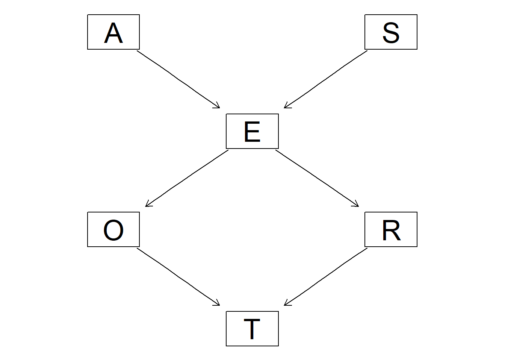
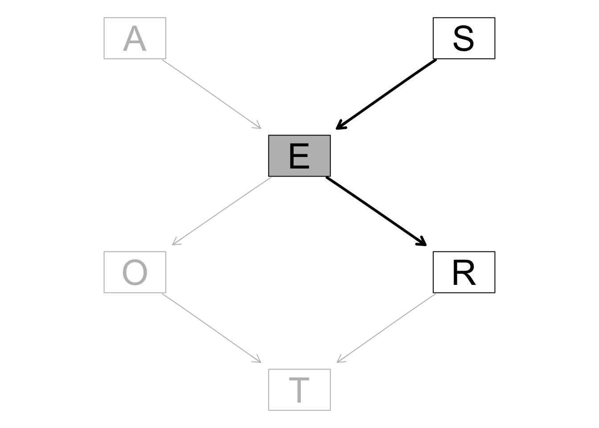
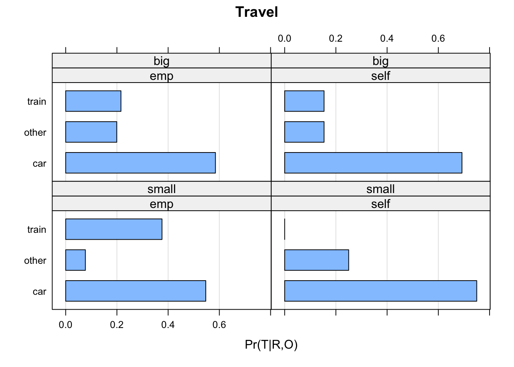
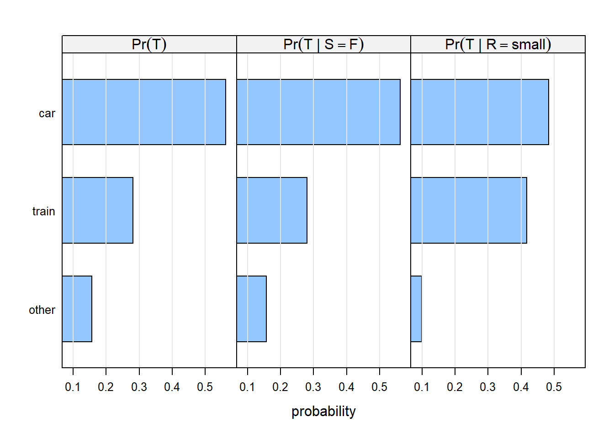
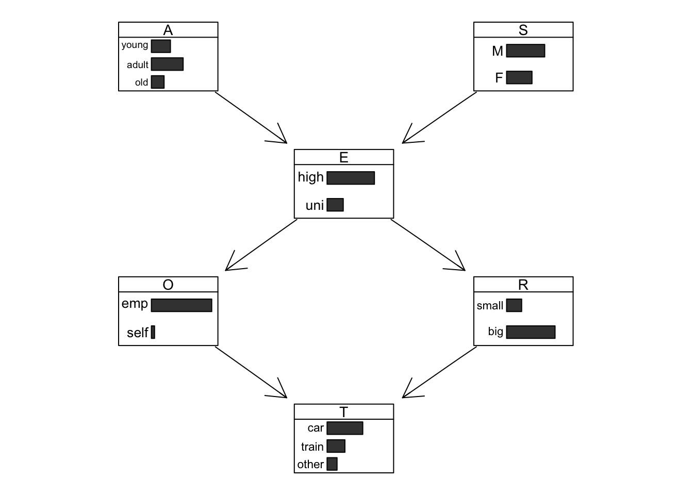
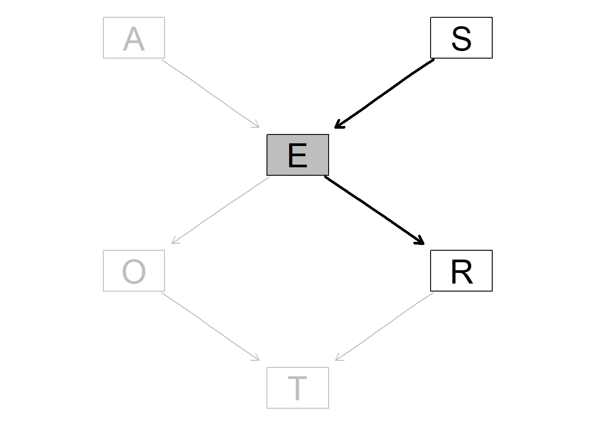

1 1.離散型データ事例
1.1 1.2グラフィカル表現
##
## Random/Generated Bayesian network
##
## model:
## [A][S][E][O][R][T]
## nodes: 6
## arcs: 0
## undirected arcs: 0
## directed arcs: 0
## average markov blanket size: 0.00
## average neighbourhood size: 0.00
## average branching factor: 0.00
##
## generation algorithm: Emptydag <- set.arc(dag, from="A", to="E")
dag <- set.arc(dag, from="S", to="E")
dag <- set.arc(dag, from="E", to="O")
dag <- set.arc(dag, from="E", to="R")
dag <- set.arc(dag, from="O", to="T")
dag <- set.arc(dag, from="R", to="T")
dag##
## Random/Generated Bayesian network
##
## model:
## [A][S][E|A:S][O|E][R|E][T|O:R]
## nodes: 6
## arcs: 6
## undirected arcs: 0
## directed arcs: 6
## average markov blanket size: 2.67
## average neighbourhood size: 2.00
## average branching factor: 1.00
##
## generation algorithm: Empty関数の説明
## [1] "A" "S" "E" "O" "R" "T"## from to
## [1,] "A" "E"
## [2,] "S" "E"
## [3,] "E" "O"
## [4,] "E" "R"
## [5,] "O" "T"
## [6,] "R" "T"まとめてアークを追加することも可能
dag2 <- empty.graph(nodes = c("A","S","E","O","R","T"))
arc.set <- matrix(c("A","E",
"S","E",
"E","O",
"E","R",
"O","T",
"R","T"),
byrow =TRUE, ncol = 2,
dimnames = list(NULL, c("from", "to")))
arcs(dag2) <- arc.set
dag2##
## Random/Generated Bayesian network
##
## model:
## [A][S][E|A:S][O|E][R|E][T|O:R]
## nodes: 6
## arcs: 6
## undirected arcs: 0
## directed arcs: 6
## average markov blanket size: 2.67
## average neighbourhood size: 2.00
## average branching factor: 1.00
##
## generation algorithm: Empty## [1] TRUE1.2 1.3確率的表現
BNを作成するに当たり変数に同時確率分布を導入する必要あり
すべて離散型データなのでRにおいて水準(level)という非連続状態のデータセットを定義する必要あり
A.lv <-c("young","adult","old")
S.lv <-c("M","F")
E.lv <-c("high","uni")
O.lv <-c("emp","self")
R.lv <-c("small","big")
T.lv <-c("car","train","other")## A
## young adult old
## 0.3 0.5 0.2## S
## M F
## 0.6 0.4## E
## O high uni
## emp 0.96 0.92
## self 0.04 0.08## E
## R high uni
## small 0.25 0.2
## big 0.75 0.8E.prob <-array(c(0.75,0.25,0.72,0.28,0.88,0.12,0.64,0.36,0.70,0.30,0.90,0.10), dim = c(2,3,2), dimnames = list(E=E.lv, A=A.lv, S=S.lv))
E.prob## , , S = M
##
## A
## E young adult old
## high 0.75 0.72 0.88
## uni 0.25 0.28 0.12
##
## , , S = F
##
## A
## E young adult old
## high 0.64 0.7 0.9
## uni 0.36 0.3 0.1T.prob <-array(c(0.48,0.42,0.10,0.56,0.36,0.08,0.58,0.24,0.18,0.70,0.21,0.09), dim = c(3,2,2), dimnames = list(T=T.lv, O=O.lv, R=R.lv))
T.prob## , , R = small
##
## O
## T emp self
## car 0.48 0.56
## train 0.42 0.36
## other 0.10 0.08
##
## , , R = big
##
## O
## T emp self
## car 0.58 0.70
## train 0.24 0.21
## other 0.18 0.09上記の条件付き確率表とDAGを組み合わせる必要あり
#cptは条件付き確率表を意味する
cpt <- list(A = A.prob, S = S.prob, E = E.prob, O = O.prob, R = R.prob, T= T.prob)
bn <- custom.fit(dag, cpt)## [1] 21## from to
## [1,] "A" "E"
## [2,] "S" "E"
## [3,] "E" "O"
## [4,] "E" "R"
## [5,] "O" "T"
## [6,] "R" "T"##
## Parameters of node R (multinomial distribution)
##
## Conditional probability table:
##
## E
## R high uni
## small 0.25 0.20
## big 0.75 0.80## E
## R high uni
## small 0.25 0.20
## big 0.75 0.80##
## Bayesian network parameters
##
## Parameters of node A (multinomial distribution)
##
## Conditional probability table:
## A
## young adult old
## 0.3 0.5 0.2
##
## Parameters of node S (multinomial distribution)
##
## Conditional probability table:
## S
## M F
## 0.6 0.4
##
## Parameters of node E (multinomial distribution)
##
## Conditional probability table:
##
## , , S = M
##
## A
## E young adult old
## high 0.75 0.72 0.88
## uni 0.25 0.28 0.12
##
## , , S = F
##
## A
## E young adult old
## high 0.64 0.70 0.90
## uni 0.36 0.30 0.10
##
##
## Parameters of node O (multinomial distribution)
##
## Conditional probability table:
##
## E
## O high uni
## emp 0.96 0.92
## self 0.04 0.08
##
## Parameters of node R (multinomial distribution)
##
## Conditional probability table:
##
## E
## R high uni
## small 0.25 0.20
## big 0.75 0.80
##
## Parameters of node T (multinomial distribution)
##
## Conditional probability table:
##
## , , R = small
##
## O
## T emp self
## car 0.48 0.56
## train 0.42 0.36
## other 0.10 0.08
##
## , , R = big
##
## O
## T emp self
## car 0.58 0.70
## train 0.24 0.21
## other 0.18 0.091.3 1.4パラメータの推定：条件付き確率表
パラメータ=局所的分布における条件付き確率そのもの
#bn.fit関数を用いることでデータからパラメータ推定可能
#mleは最尤推定法を用いている
bn.mle <- bn.fit(dag, data = survey, method = "mle")
bn.mle$O##
## Parameters of node O (multinomial distribution)
##
## Conditional probability table:
##
## E
## O high uni
## emp 0.98082192 0.92592593
## self 0.01917808 0.07407407#bayesにすると事後分布を用いたベイズ的方法になる
bn.bayes <- bn.fit(dag, data = survey, method = "bayes", iss = 10)
bn.bayes$O##
## Parameters of node O (multinomial distribution)
##
## Conditional probability table:
##
## E
## O high uni
## emp 0.97432432 0.91071429
## self 0.02567568 0.08928571iss (imaginary sample size)はオプション：事前分布にどの程度重み付けするか
小さい値（1-15）にするのが一般的、値が大きいと事後分布が一様になり事前分布として用いられた一様分布へと近似していく
ベイズのほうがより1から遠い値となる→0を含むセルが減る
最尤推定法よりもロバストで予測力の高いベイジアンネットワークを構築可能
1.4 1.5DAG構造の学習：検定とスコア
DAGの構造を探索していくこと自体が調査の目的の場合もある
どのノードが分析対象のノードと直接関連があるか特定可能
1.4.1 1.5.1条件付き独立性検定
個々のアークの有無に焦点を当てたもの
条件付き独立の帰無仮説（確率的に独立である）が棄却されるならそのアークをDAGの中に加えることができる
##
## Mutual Information (disc.)
##
## data: T ~ E | O + R
## mi = 9.8836, df = 8, p-value = 0.2733
## alternative hypothesis: true value is greater than 0##
## Pearson's X^2
##
## data: T ~ E | O + R
## x2 = 8.2375, df = 8, p-value = 0.4106
## alternative hypothesis: true value is greater than 0いずれもp値が大きいため、E→Tの関連性で有意差なし→現在のDAG構造に加えるような関連性なし
## from to strength
## 1 A E 0.0009777168
## 2 S E 0.0012537013
## 3 E O 0.0026379469
## 4 E R 0.0005599201
## 5 O T 0.4339127237
## 6 R T 0.0013584250O→T以外のすべてのアークは支持されたものと判断可能
1.4.2 1.5.2ネットワークスコア
ネットワーク全体としてのDAGに焦点を当てている。
DAGがデータの依存構造をどの程度よく反映しているかの適合度指標
\[ BIC = \log\widehat{Pr}(A,S,E,O,R,T) - \frac{d}{2}\log n \]
n：サンプルサイズ、d：ネットワーク全体のパラメータ数
DAGがデータにフィットしているほど高い値を示す
## [1] -2012.687## [1] -1998.284#例としてランダムグラフを作ってみるとさすがにスコアが悪い
rnd <- random.graph(nodes = c("A","S","E","O","R","T"))
modelstring(rnd)## [1] "[A][S][E|S][O|A][R|S:E:O][T|S:O]"## [1] -2033.747ネットワークのスコアが最大となるDAGを探索するためのアルゴリズム
山登り法
アークなしのDAGからスタートして1つひとつのアークを順次追加、除去、反転させることで最もネットワークスコアが増加する状況を探索する方法
hcを使ったらデフォルトはbicで計算される
## [1] "[R][E|R][T|R][A|E][O|E][S|E]"## [1] -1998.432## from to strength
## 1 R E -3.3896261
## 2 E S -2.7260640
## 3 R T -1.8484171
## 4 E A -1.7195441
## 5 E O -0.82669371.5 1.6離散型データでベイジアンネットワークを使ってみよう
1.5.1 1.6.1DAG構造を使って
## [1] FALSE教育水準(E)は性別(S)から影響を受けており、居住地(R)は教育水準(E)から影響を受けている（S→E、E→R）ので
性別(S)と居住地(R)が関連することは明らか
教育水準(E)を条件付けると性別(S)と居住地(R)の間のパスをブロックすることになるので独立になる
## [1] TRUE\[ Pr(O,R|E) = Pr(O|E)Pr(R|E) \]
1.5.2 1.6.2条件付き確率表を使って
1.5.2.1 1.6.2.1厳密推論
ベイジアンネットワークを特別丹念に構築されたツリー構造に変換する方法に依拠している
ツリー構造に対して、compile関数で確率表を計算できる→setEvicence関数を用いてエビデンスをjunctionオブジェクトに入力する
例）「女性が自動車や電車を利用することに対する態度」を調査したい。男女のサンプルvs女性だけのサンプルで比較したい
## T
## car train other
## 0.5618340 0.2808573 0.1573088## T
## car train other
## 0.5620577 0.2806144 0.1573280→好みは同程度であった
例2）小規模の都市に居住することで利用する交通手段がどうかわるか
## T
## car train other
## 0.48388675 0.41708494 0.09902831条件付き独立性を評価したい
例3）教育水準が与えられた場合の性別と交通手段の同時確率分布
jedu <- setEvidence(junction, nodes = "E", states = "high")
SxT.cpt <- querygrain(jedu, nodes = c("S","T"), type = "conditional")
SxT.cpt## T
## S car train other
## M 0.612557 0.612557 0.612557
## F 0.387443 0.387443 0.3874432番目のノードで条件付けられた場合の1番目のノードの分布を算出できた
交通手段(T)がどのような状態でも男性にかかる条件付き確率は同じ→教育水準Eのもとで性別Sと交通手段Tは独立
1.5.2.2 1.6.2.2近似推論
ベイジアンネットワークを利用することで観測値をランダムに生成する方法（モンテカルロシミュレーション）
計算コストは高いが、多くのノードを含む大規模なBNを扱うことが可能
#あるエビデンスを与えた場合の特定のイベントに関する確率を算出する
cpquery(bn, event = (S == "M") & (T == "car"), evidence = (E == "high"))## [1] 0.3397436ただしquerygrain関数で出される正確な値とは多少異なる
#nを増やせば多少改善はするが時間がかかる
cpquery(bn, event = (S == "M") & (T == "car"), evidence = (E == "high"), n = 10^6)## [1] 0.3423342#尤度重み付き方法を使えば真値に非常に近い確率で算出可能
cpquery(bn, event = (S == "M") & (T == "car"), evidence = list(E = "high"), method = "lw")## [1] 0.3527989#cpdist関数はエビデンスに適合するような変数のランダムな観測値を算出し、それを含んだdfを返す
SxT <- cpdist(bn, nodes = c("S", "T"), evidence = (E == "high"))
head(SxT)## S T
## 1 M train
## 2 F car
## 3 F car
## 4 F car
## 5 M car
## 6 F train1.6 1.7ベイジアンネットワークの図示
詳細は以下に記載あり
https://www.bnlearn.com/examples/graphviz-plot/

hlight <- list(nodes = nodes(dag), arcs = arcs(dag), col = "grey", textCol = "grey")
pp <- graphviz.plot(dag, highlight = hlight, render = FALSE)
library(Rgraphviz)
edgeRenderInfo(pp) <- list(col = c("S~E" ="black", "E~R" = "black"),
lwd = c("S~E" = 3, "E~R" = 3))
nodeRenderInfo(pp) <-
list(col = c("S" = "black", "E" = "black", "R" = "black"),
textCol = c("S" = "black", "E" = "black", "R" = "black"),
fill = c("E" = "grey"))
renderGraph(pp)
1.6.1 1.7.2条件付き確率分布の図示

交通手段の周辺確率と2つの条件付き確率クエリの結果を比較する
Evidence <- factor(c(rep("Unconditional",3), rep("Female", 3),
rep("Small City",3)),
levels = c("Unconditional", "Female", "Small City"))
Travel <- factor(rep(c("car", "train", "other"), 3),
levels = c("other", "train", "car"))
distr <- data.frame(Evidence = Evidence, Travel = Travel,
Prob = c(0.5618, 0.2808, 0.15730, 0.5620, 0.2806,
0.1573, 0.4838, 0.4170, 0.0990))
distr## Evidence Travel Prob
## 1 Unconditional car 0.5618
## 2 Unconditional train 0.2808
## 3 Unconditional other 0.1573
## 4 Female car 0.5620
## 5 Female train 0.2806
## 6 Female other 0.1573
## 7 Small City car 0.4838
## 8 Small City train 0.4170
## 9 Small City other 0.0990library(lattice)
barchart(Travel ~ Prob | Evidence, data = distr,
layout = c(3, 1), xlab = "probability",
scales = list(alternating = 1, tck = c(1, 0)),
strip = strip.custom(factor.levels =
c(expression(Pr(T)),
expression(Pr({T} * " | " * {S == F})),
expression(Pr({T} * " | " * {R == small})))),
panel = function(...) {
panel.barchart(...)
panel.grid(h = 0, v = -1)
})
仕様書
https://www.bnlearn.com/documentation/man/graphviz.chart.html
このあたりはグラフ描画がうまくいかないのでパス。そこまで重要でもないし

graphviz.chart(as.bn.fit(jedu, including.evidence = TRUE), grid = TRUE,
bar.col = c(A = "black", S = "black", E = "grey", O = "black",
R = "black", T = "black"),
strip.bg = c(A = "transparent", S = "transparent", E = "grey",
O = "transparent", R = "transparent", T = "transparent"),
main = "BN with Evidence")